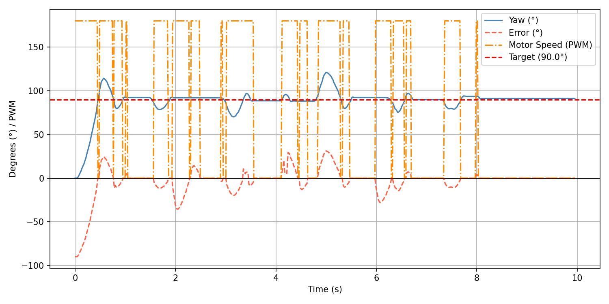

Lab 6: Orientation Control
Goal: Get experience with orientation PID using the IMU. Use the IMU to control the yaw of the robot.
Prelab
Before writing commands for the orientation PID, I started by setting up Digital Motion Processing (DMP) for orientation. The DMP allows for drift and error correction by combining readings from the gyroscope, accelerometer, and magnetometer.
For this lab specifically, I referenced Example7_DMP_Quat6_EulerAngles, which takes quaternion data from the DMP and converts to reliable roll, pitch, and yaw angles. I followed the directions on this page to set up the DMP.
After getting the example above to work, I transferred necessary code to my getYawFromDMP() function. I made the following changes to the setup() code, and the yaw calculation code is below. I also quickly verified I was getting correct yaw angles with a Serial Plotter visualization.
Updated setup() for DMP
// REST OF SETUP NOT SHOWN
// DMP
bool dmp_success = true;
dmp_success &= (myICM.initializeDMP() == ICM_20948_Stat_Ok);
dmp_success &= (myICM.enableDMPSensor(INV_ICM20948_SENSOR_GAME_ROTATION_VECTOR) == ICM_20948_Stat_Ok);
dmp_success &= (myICM.setDMPODRrate(DMP_ODR_Reg_Quat6, 0) == ICM_20948_Stat_Ok); // max rate
dmp_success &= (myICM.enableFIFO() == ICM_20948_Stat_Ok);
dmp_success &= (myICM.enableDMP() == ICM_20948_Stat_Ok);
dmp_success &= (myICM.resetDMP() == ICM_20948_Stat_Ok);
dmp_success &= (myICM.resetFIFO() == ICM_20948_Stat_Ok);
if (!dmp_success) {
Serial.println("DMP init failed!");
while (1);
}getYawFromDMP()
Updates the global pid_yaw using DMP readings. Returns true if new data was received.
bool getYawFromDMP() {
bool newYaw = false;
icm_20948_DMP_data_t data;
myICM.readDMPdataFromFIFO(&data);
if ((myICM.status == ICM_20948_Stat_Ok) || (myICM.status == ICM_20948_Stat_FIFOMoreDataAvail)) {
if ((data.header & DMP_header_bitmap_Quat6) > 0) {
double q1 = ((double)data.Quat6.Data.Q1) / 1073741824.0;
double q2 = ((double)data.Quat6.Data.Q2) / 1073741824.0;
double q3 = ((double)data.Quat6.Data.Q3) / 1073741824.0;
double q0 = sqrt(1.0 - ((q1 * q1) + (q2 * q2) + (q3 * q3)));
double qw = q0;
double qx = q2;
double qy = q1;
double qz = -q3;
// yaw (z-axis rotation)
double t3 = +2.0 * (qw * qz + qx * qy);
double t4 = +1.0 - 2.0 * (qy * qy + qz * qz);
pid_turn_yaw = atan2(t3, t4) * 180.0 / PI;
newYaw = true;
}
}
if (myICM.status != ICM_20948_Stat_FIFOMoreDataAvail) delay(10);
return newYaw;
}Yaw Visualization
I quickly verified I was receiving correct yaw angles using the Serial Plotter:
Before implementing DMP for yaw, I tried using only the gyroscope-calculated yaw, but this builds integration error over time — even when the robot is stationary, yaw slowly drifts. The DMP handles this by fusing gyroscope, accelerometer, and magnetometer data, making it far more suitable for PID turning.
Implementing Orientation Control with PID
After setting up the DMP for yaw angles, I implemented orientation control with PD. Similar to the last lab, I wanted a simple workflow for starting/ending the PID process and sending collected data over Bluetooth. I added the following global variables:
int pid_turn_run_flag = 0;
const int PID_TURN_DATA_LEN = 1000;
int pid_turn_data_count = 0;
float pid_turn_yaw;
float turn_K_p = 0.0;
float turn_K_i = 0.0;
float turn_K_d = 0.0;
float pid_turn_Kp_arr[PID_TURN_DATA_LEN];
float pid_turn_Ki_arr[PID_TURN_DATA_LEN];
float pid_turn_Kd_arr[PID_TURN_DATA_LEN];
float pid_turn_start_time;
float pid_turn_current_time;
float pid_turn_last_time;
float pid_turn_position_error = 0.0;
float pid_turn_prev_error = 0.0;
float pid_turn_integral_term = 0.0;
float pid_turn_derivative_term = 0.0;
float pid_turn_output = 0.0;
float pid_turn_time_arr[PID_TURN_DATA_LEN];
float pid_turn_yaw_arr[PID_TURN_DATA_LEN];
float pid_turn_error_arr[PID_TURN_DATA_LEN];
float pid_turn_left_motor_arr[PID_TURN_DATA_LEN];
float pid_turn_right_motor_arr[PID_TURN_DATA_LEN];I then added three commands, similar to the last lab.
START_PID_TURN
Receives Kp, Ki, Kd, and the target yaw from Python, then resets global variables and records the starting yaw as an offset.
case START_PID_TURN:
success = robot_cmd.get_next_value(turn_K_p); if (!success) return;
success = robot_cmd.get_next_value(turn_K_i); if (!success) return;
success = robot_cmd.get_next_value(turn_K_d); if (!success) return;
success = robot_cmd.get_next_value(pid_turn_target_yaw); if (!success) return;
pid_turn_data_count = 0;
pid_turn_prev_error = 0;
pid_turn_integral_term = 0;
pid_turn_position_error = 0;
pid_turn_derivative_term = 0;
myICM.resetFIFO();
delay(50);
while (!getYawFromDMP()) {}
pid_turn_yaw_offset = pid_turn_yaw;
pid_turn_start_time = millis();
pid_turn_current_time = millis();
pid_turn_last_time = millis();
pid_turn_run_flag = 1;
Serial.print("PID for TURN started!");
break;STOP_PID_TURN
Stops the current PID run and halts the motors.
case STOP_PID_TURN:
pid_turn_run_flag = 0;
stop();
Serial.println("PID for TURN stopped!");
break;SEND_PID_TURN_DATA
Sends time, yaw, error, motor values, and PID term contributions over Bluetooth.
void sendOrientationPIDDataOverBluetooth() {
Serial.print("Sending "); Serial.print(pid_turn_data_count); Serial.println(" PID TURN samples");
int i = 0;
while (i < pid_turn_data_count) {
tx_estring_value.clear();
tx_estring_value.append(pid_turn_time_arr[i]); tx_estring_value.append(",");
tx_estring_value.append(pid_turn_yaw_arr[i]); tx_estring_value.append(",");
tx_estring_value.append(pid_turn_error_arr[i]); tx_estring_value.append(",");
tx_estring_value.append(pid_turn_left_motor_arr[i]); tx_estring_value.append(",");
tx_estring_value.append(pid_turn_right_motor_arr[i]); tx_estring_value.append(",");
tx_estring_value.append(pid_turn_Kp_arr[i]); tx_estring_value.append(",");
tx_estring_value.append(pid_turn_Ki_arr[i]); tx_estring_value.append(",");
tx_estring_value.append(pid_turn_Kd_arr[i]);
tx_characteristic_string.writeValue(tx_estring_value.c_str());
delay(10);
i++;
}
}With the commands in place, I implemented the PID loop itself. The main loop checks pid_turn_run_flag and calls runOrientationPIDIteration() each cycle.
Main Loop
void loop() {
// REST OF FUNCTION NOT SHOWN
if (pid_turn_run_flag) {
runOrientationPIDIteration();
}
}runOrientationPIDIteration()
void runOrientationPIDIteration() {
if (pid_turn_data_count >= PID_TURN_DATA_LEN) {
pid_turn_run_flag = 0;
stop();
Serial.println("PID orientation buffer full, stopping");
return;
}
// get latest yaw
bool newYaw = getYawFromDMP();
if (!newYaw) return;
pid_turn_last_time = pid_turn_current_time;
pid_turn_current_time = millis();
float elapsed = pid_turn_current_time - pid_turn_start_time;
pid_turn_time_arr[pid_turn_data_count] = pid_turn_current_time;
float logged_yaw = pid_turn_yaw - pid_turn_yaw_offset;
pid_turn_yaw_arr[pid_turn_data_count] = logged_yaw;
calculateSpeedWithOrientationPID(pid_turn_data_count, turn_K_p, turn_K_i, turn_K_d, elapsed, pid_turn_yaw);
pid_turn_data_count++;
}calculateSpeedWithOrientationPID()
void calculateSpeedWithOrientationPID(int turn_arr_index, float turn_K_p,
float turn_K_i, float turn_K_d,
float elapsed_time, float current_yaw) {
float dt = (pid_turn_current_time - pid_turn_last_time) / 1000.0;
if (dt <= 0) dt = 0.001;
// Proportional term
float relative_yaw = current_yaw - pid_turn_yaw_offset;
while (relative_yaw > 180.0) relative_yaw -= 360.0;
while (relative_yaw < -180.0) relative_yaw += 360.0;
pid_turn_position_error = relative_yaw - pid_turn_target_yaw;
while (pid_turn_position_error > 180.0) pid_turn_position_error -= 360.0;
while (pid_turn_position_error < -180.0) pid_turn_position_error += 360.0;
// Integral term
pid_turn_integral_term += pid_turn_position_error * dt;
pid_turn_integral_term = constrain(pid_turn_integral_term, -200.0, 200.0);
// Derivative term (on measurement, with low-pass filter)
float raw_derivative = -(pid_turn_yaw - pid_turn_prev_yaw) / dt;
pid_turn_filtered_derivative = 0.1 * raw_derivative + 0.9 * pid_turn_filtered_derivative;
pid_turn_derivative_term = pid_turn_filtered_derivative;
pid_turn_prev_yaw = pid_turn_yaw;
float P_term = turn_K_p * pid_turn_position_error;
float I_term = turn_K_i * pid_turn_integral_term;
float D_term = turn_K_d * pid_turn_derivative_term;
int turn_speed = (int)(P_term + I_term + D_term);
// Clamp magnitude
turn_speed = constrain(turn_speed, -maxSpeed, maxSpeed);
// Deadband
if (abs(turn_speed) < 1) {
stop();
turn_speed = 0;
} else {
if (turn_speed > 0 && turn_speed < minTurnSpeed) turn_speed = minTurnSpeed;
if (turn_speed < 0 && turn_speed > -minTurnSpeed) turn_speed = -minTurnSpeed;
// Positive error = yaw too high = turn left (counter-clockwise)
if (turn_speed > 0) {
turn_left(turn_speed);
} else {
turn_right(-turn_speed);
}
}
pid_turn_prev_error = pid_turn_position_error;
pid_turn_last_time = pid_turn_current_time;
pid_turn_output = (float)turn_speed;
pid_turn_error_arr[turn_arr_index] = pid_turn_position_error;
pid_turn_left_motor_arr[turn_arr_index] = (turn_speed > 0) ? turn_speed : 0;
pid_turn_right_motor_arr[turn_arr_index] = (turn_speed > 0) ? 0 : -turn_speed;
pid_turn_Kp_arr[turn_arr_index] = P_term;
pid_turn_Ki_arr[turn_arr_index] = I_term;
pid_turn_Kd_arr[turn_arr_index] = D_term;
}Testing Orientation Control with PID
I tested orientation control using the following Python workflow, which sends PID gains and a target angle, waits for the run to complete, then retrieves the data over Bluetooth.
def run_pid_turn(kp, ki, kd, pid_time_span, filename):
def pid_handler(sender_uuid, data):
datapoint = data.decode("utf-8").strip()
parts = datapoint.split(",")
if len(parts) < 8:
return
t, yaw, error = parts[0], parts[1], parts[2]
left_motor, right_motor = parts[3], parts[4]
kp_val, ki_val, kd_val = parts[5], parts[6], parts[7]
with open(filename, "a+") as f:
f.seek(0)
if f.read(1) == "":
f.write("Time,Yaw,Error,LeftMotor,RightMotor,Kp,Ki,Kd\n")
f.write(f"{t},{yaw},{error},{left_motor},{right_motor},{kp_val},{ki_val},{kd_val}\n")
target_angle = 90.0
ble.send_command(CMD.START_PID_TURN, f"{kp}|{ki}|{kd}|{target_angle}")
time.sleep(pid_time_span)
ble.send_command(CMD.STOP_PID_TURN, "")
time.sleep(0.5)
ble.start_notify(ble.uuid['RX_STRING'], pid_handler)
ble.send_command(CMD.SEND_PID_TURN_DATA, "")
kp = 0.22
ki = 0.0
kd = 0.08
timespan = 10 # seconds
run_pid_turn(kp, ki, kd, timespan, "pid_orientation_run.csv")When I began testing, the PWM signals for turning were not large enough to overcome static friction. I added minimum and maximum turn speed constants:
const int minTurnSpeed = 180;
const int maxTurnSpeed = 250;I tuned with a 90-degree target angle. I started with only the proportional term, then added the derivative term. I also updated calculateSpeedWithOrientationPID() so that the input angle is relative to the starting yaw — sending 90° turns the robot 90° from wherever it starts, which is useful for waypoint navigation later.
Kp = 0.2
Turning is pretty slow.
Kp = 0.5
Good turning speed. Slightly overshoots but adjusts well.
Kp = 0.5, Kd = 0.3
Derivative is far too high — the robot becomes unstable.
Because the derivative term is applied to an already-integrated signal (the yaw angle from the gyroscope), it amplifies noise significantly. I switched to derivative-on-measurement with a low-pass filter to handle this:
float raw_derivative = -(pid_turn_yaw - pid_turn_prev_yaw) / dt;
pid_turn_filtered_derivative = 0.1 * raw_derivative + 0.9 * pid_turn_filtered_derivative;
pid_turn_derivative_term = pid_turn_filtered_derivative;
pid_turn_prev_yaw = pid_turn_yaw;During testing I also ran into several issues: in some trials the robot would spin a full revolution at startup before PID engaged. This was fixed by flushing the DMP FIFO queue on START_PID_TURN. I also discovered that two wires connecting the left motor driver to the Artemis had detached, which took a long time to find.
Optimal Result — Kp = 0.3, Kd = 0.01
After debugging and tuning, the robot reliably turns to 90° and holds position.

Waypoints
To verify that the robot could accept a sequence of different target angles, I sent multiple START_PID_TURN commands in succession:
Kp = 0.3
Ki = 0.0
Kd = 0.01
ble.send_command(CMD.START_PID_TURN, f"{Kp}|{Ki}|{Kd}|90.0")
time.sleep(2)
ble.send_command(CMD.START_PID_TURN, f"{Kp}|{Ki}|{Kd}|90.0")
time.sleep(2)
ble.send_command(CMD.START_PID_TURN, f"{Kp}|{Ki}|{Kd}|180.0")
time.sleep(2)
ble.send_command(CMD.START_PID_TURN, f"{Kp}|{Ki}|{Kd}|-45.0")Collaboration
I referenced Lucca Correia's lab page for help with implementing the PWM settings and derivative kick functionality. I ran into many of the same problems he did and his write-up was very helpful. I also used Claude for debugging — I lost track of variables and sometimes didn't update them in the correct place or at all. Specifically, I used Claude to help implement the relative orientation functionality: I wanted the robot to turn to the received angle command relative to its starting position. I realized after some time that I would boot up the robot and move it, shifting the initial yaw, so when the START_PID_TURN command was finally received the initial yaw was way off. Claude helped me fix this by resetting the FIFO queue when the command is received, so that 0° is always set to wherever the car is sitting at that moment. I also used Claude to style this website.